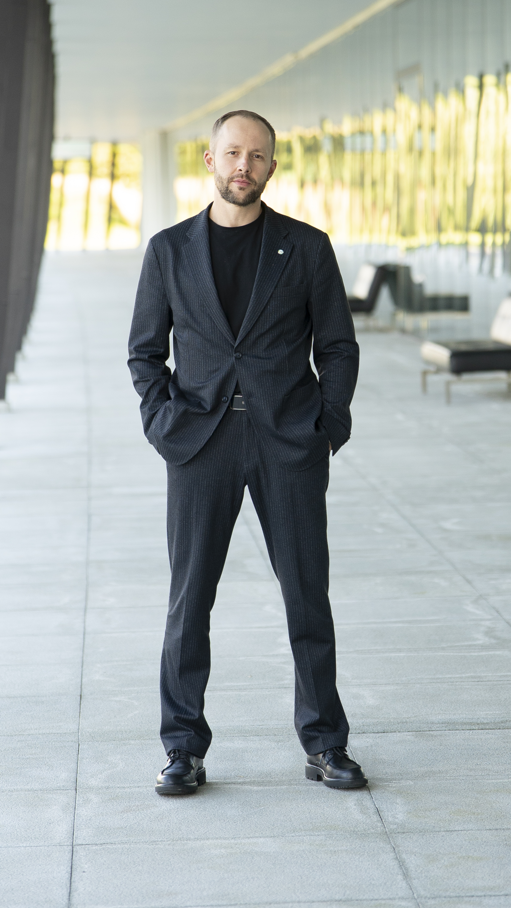

GM не спит
Сложное можно делать проще.
Я управляю отелями, людьми и процессами. Здесь собираю то, что помогает убирать лишнее и принимать решения спокойнее.
- 20+ лет в сфере гостеприимства
- Действующий генеральный менеджер сети отелей

GM не спит
Я управляю отелями, людьми и процессами. Здесь собираю то, что помогает убирать лишнее и принимать решения спокойнее.
Отчет, встреча или AI-инструмент сами по себе ничего не стоят. Мне важно, что после них реально изменилось.
Мой порядок простой: удалить ненужное, упростить оставшееся, делегировать и только потом автоматизировать.
Если любое решение ждёт одного человека, проблема уже не в загрузке руководителя. Проблема в конструкции системы.
Быстрый тест руководителя
Без созвонов с вами, без очереди из согласований, без сообщений «нужно ваше решение».
Выберите вариант. Ответ обычно говорит о системе больше, чем должность руководителя.
Кто пишет
20+ лет в гостеприимстве, 12+ лет в управлении, четыре открытия отелей с нуля. Меня интересуют люди, сервис, AI и процессы, которые перестают требовать ручного контроля.
GM не спит
Если вам тоже интереснее эффект, чем видимость бурной деятельности, увидимся в канале.
В Telegram ↗